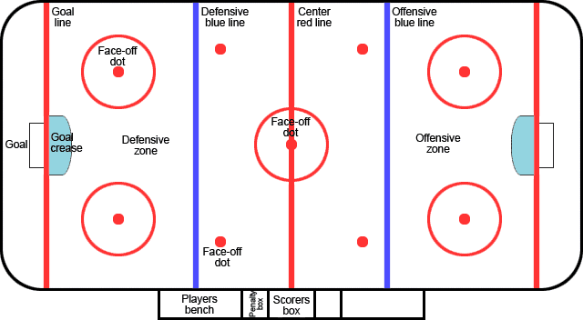

How To Play
Each team has 4 lines. There are three forwards and 2 defencemen per line.
There are also 2 goalies (one is a back-up). There are always 6 players on the ice:
3 forwards 2 defence and 1 goalie. The forwards and defence sub off for each other
usually every minute in their respective positions. The goalie is only subbed off when
he/she is having a bad game or is injured.
During the game, there are 3 periods each lasting 20 minutes.
The object of the game is to score as many goals as possible. To score, you have to pass the
other team by passing the puck and then shoot the puck past the goalie and into the net. Easy!
Layout Of The Ice
The ice is made up of three zones: the offensive zone (the other team’s side), the defensive zone (your side), and the neutral zone (mid-ice). There is a red centre line called the red line, and 2 blue lines in opposite ends. The zones are separated by the blue lines. The neutral zone had the red line in it as well. There are 2 goal lines. 1 is in the offensive zone and 1 is in the defensive zone. The nets rest on these lines. There are also 7 face off dots (2 in each zone). In the neural zone, there is also a third face-off dot only used when the period starts or when a goal is scored. To do a face-off the 2 teams players line up at the dot on their respective sides and one of the forwards (the centerman) stay right at the dot. When the referee drops the puck onto the dot, the center men battle for the puck and the play continues.
Rules
There are multiple rules and guidelines you must follow in order to score. The basic rules are listed below.
- Time stoppages- Play is stopped when a violation is made or when a goal is scored. When this happens, time is stopped and there is a face- off at one of the 7 dots. Once the puck is dropped, time continues.
- Icing- when the puck is shot into the other team’s zone before the shooter crosses the red line and his/her teammates do not reach the puck before it crosses the goal line. The play is stopped and there is a face off in the person who shot the puck’s zone.
- Crease Violation- The goalie stands in the crease in front of the blue line to protect the net. The crease is a small blue semi-circle. A player is not allowed to score within the crease. If the player scores in the crease, the goal is not counted and the face-off will be outside the zone.
- Scoring- On top of not scoring in the crease, players are not allowed to kick or to smack the puck with your hand into the net. If this occurs, the play goal will be discounted and the face-off will be outside the zone. You can only score using your hockey stick.
- Minor Penalties- If you trip a player, slash someone with your stick, or body check someone from behind, you will be given a penalty. These penalties are only minor so you will be put into the penalty box for 2 minutes. On top of this, your team will only be allowed 4 players on the ice for those 2 minutes.
- Major penalties- Major penalties such as: hitting the player's head and fighting will result in a 5 minute penalty. The team of the penalized player will be forced to play 4-5 minutes (depending on the severity of the penalty) with 4 players on the ice. It is possible to get more than 1 penalty. When this occurs, the penalized player will be forced to play 2 players down till the penalty is served.
- Offside- When a player crosses the other team's blueline (offensive zone blue line) before the puck hits his/her hockey stick. The puck must cross the line first before the player. If there is an offside, the play will be stopped and there will be a face-off outside the other team’s blue line.
Safety/Equipment
If you are playing for fun, you only need skates, hockey gloves, a hockey stick, a helmet, skates, and a bag to put the equipment in. If you are playing a competitive game, you must also wear these:
- Shinpads
- A jock or a pelvic protector for girls
- Elbow pads
- Wrist guards (not mandatory)
- A chest guard
- Game Shirt and Game Socks
- Hockey Pants
- A neck guard

Back to the Top